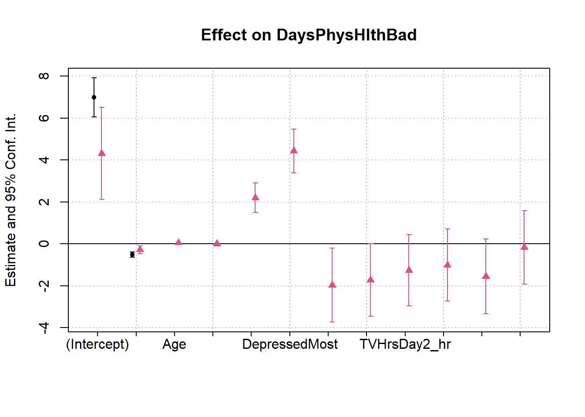

library(tidyverse)
library(NHANES)
library(fixest)multi_reg
Multiple Linear Regression
Load relevant libraries and for more details you browse a course on econometrics in swirl library.
Now uploaded NHANES data and explore variables and other information contained in NHANES data as follows
data(NHANES)
help(NHANES)starting httpd help server ... doneSimple Linear Regression
Run a model having self report bad health on sleep hours and store results as SLR.
SLR<-feols(DaysPhysHlthBad~SleepHrsNight,data=NHANES)NOTE: 3,036 observations removed because of NA values (LHS: 2,468, RHS: 2,245).## Regression results table
etable(SLR) SLR
Dependent Var.: DaysPhysHlthBad
(Intercept) 6.990*** (0.4737)
SleepHrsNight -0.5110*** (0.0670)
_______________ ___________________
S.E. type IID
Observations 6,964
R2 0.00830
Adj. R2 0.00815
---
Signif. codes: 0 '***' 0.001 '**' 0.01 '*' 0.05 '.' 0.1 ' ' 1How can we interpret that -.51 in the table?
Sleeping one more hour per night is associated with a decrease in the number of days of bad physical health by 51 percent
Sleeping one more hour per night is associated with a decrease in the number of days of bad physical health by .51
The correlation between hours of sleep and days of bad health is -.51
Sleeping one more hour per night is associated with an increase in the number of days of bad physical health by 51 percent
Sleeping one more hour per night is associated with an increase in the number of days of bad physical health by .51
If people slept 0 hours per night, we would predict theyd have -.51 days of bad physical health.
Option 2 is the correct answer.
Browse variables and think about which other variables can be included as control. Criteria for inclusion of a variable that it should be correlated with variable of interest, in this case its sleep, and should be related with dependent or outcome variable.
A good place to start is to look through and think “is this variable likely to *cause* both hours of sleep *and* days of bad health?”
testImplications <- function( covariance.matrix, sample.size ){
library(ggm)
tst <- function(i){ pcor.test( pcor(i,covariance.matrix), length(i)-2, sample.size )$pvalue }
tos <- function(i){ paste(i,collapse=" ") }
implications <- list(c("Disease","Depressed"),
c("Disease","Age"),
c("Depressed","Age"))
data.frame( implication=unlist(lapply(implications,tos)),
pvalue=unlist( lapply( implications, tst ) ) )
}
library(dagitty)MLR<- feols(DaysPhysHlthBad~SleepHrsNight + Diabetes + Depressed + Age, data = NHANES)NOTE: 3,347 observations removed because of NA values (LHS: 2,468, RHS: 3,342).etable(MLR) MLR
Dependent Var.: DaysPhysHlthBad
(Intercept) 3.085*** (0.5384)
SleepHrsNight -0.3929*** (0.0675)
DiabetesYes 3.605*** (0.3077)
DepressedSeveral 2.111*** (0.2530)
DepressedMost 5.382*** (0.3760)
Age 0.0451*** (0.0053)
________________ ___________________
S.E. type IID
Observations 6,653
R2 0.08473
Adj. R2 0.08404
---
Signif. codes: 0 '***' 0.001 '**' 0.01 '*' 0.05 '.' 0.1 ' ' 1Adding some more control variables
MLR2 <- feols(DaysPhysHlthBad ~ SleepHrsNight + Age + HHIncomeMid + Depressed + TVHrsDay, data = NHANES)NOTE: 6,925 observations removed because of NA values (LHS: 2,468, RHS: 6,921).etable(SLR, MLR2) SLR MLR2
Dependent Var.: DaysPhysHlthBad DaysPhysHlthBad
(Intercept) 6.990*** (0.4737) 4.320*** (1.118)
SleepHrsNight -0.5110*** (0.0670) -0.2794** (0.0960)
Age 0.0549*** (0.0074)
HHIncomeMid -2.03e-5*** (3.87e-6)
DepressedSeveral 2.201*** (0.3614)
DepressedMost 4.439*** (0.5311)
TVHrsDay0_to_1_hr -1.966* (0.8987)
TVHrsDay1_hr -1.729. (0.8844)
TVHrsDay2_hr -1.265 (0.8674)
TVHrsDay3_hr -1.012 (0.8787)
TVHrsDay4_hr -1.549. (0.9112)
TVHrsDayMore_4_hr -0.1650 (0.8950)
_________________ ___________________ _____________________
S.E. type IID IID
Observations 6,964 3,075
R2 0.00830 0.08382
Adj. R2 0.00815 0.08053
---
Signif. codes: 0 '***' 0.001 '**' 0.01 '*' 0.05 '.' 0.1 ' ' 1#Interpret the -.28 coefficient on SleepHrsNight.
#1: The influence of the control variables deflates the correlation between sleep hours and bad-health days by .28
#2: Comparing two people with the same values of all control variables, an additional hour of sleep reduces bad-health days by .28
#3: An additional hour of sleep reduces bad-health days by -.28/.1 = -2.8
#4: If all the control variables were set to 0, an additional hour of sleep would reduce bad-health days by .28Coeficients plot
coefplot(list(SLR, MLR2))
## use wald() to test whether Age = 0 AND HHIncomeMid = 0.
wald(MLR2, c('Age','HHIncomeMid'))Wald test, H0: joint nullity of Age and HHIncomeMid
stat = 40.1, p-value < 2.2e-16, on 2 and 3,063 DoF, VCOV: IID.